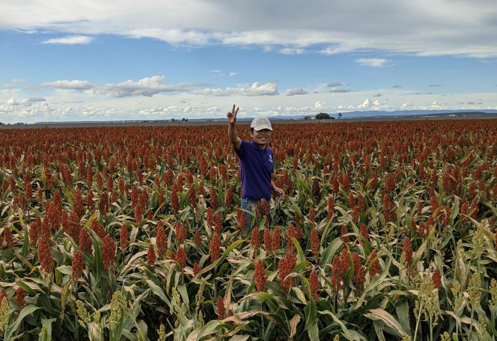

Recent Projects
Patrick is no longer taking any research projects at the moment. While he was at the University, he has involved in several projects as an undergraduate/honours student, research scholar and research associate. Following projects were listed chronologically:
2020-2021 Casual Research Assistant
1) INVITA: A technology and analytics platform for improving variety selection (Project ID: UOQ2003-011RTX)
2) CropPhen: Remote mapping of grain crop type and phenology, Enabling analytics for grain crop monitoring applications - Crop classification and mapping of phenological characteristics(Project ID: UOQ2002-010RTX)
3) High throughput feature extraction from imagery to map spatial variability (Project ID: UOQ2003-008RTX)
4) Subsoil constraint: Improving wheat yields on sodic soils (Project ID: GRDC UA00159)

2020 Winter Research Scholar
Do invasive plants change fire regimes in Australia? The genomic responses of buffel grass Cenchrus ciliaris L. to fire regimes in central Australia?
2020
Honours Student
Early-stage yield prediction in lettuce using analysis of images from unmanned aerial vehicles (UAVs)
2019
Undergraduate Student
Seed Germination Ecology of African Lovegrass [Eragrostis curvula (Schrad.) Nees]
Research
He is interested in a few topics realted to remote sensing, precision agriculture, ecology.
Research Papers:
- The impact of roadside burning on genetic diversity in a high-biomass invasive grass
Di, Binyin; Firn, Jennifer; Buckley, Yvonne M; Lomas, Kate; Pausas, Juli G; Smith, Annabel L
Evolutionary Applications , vol. 00, pp. 1–14, 2022, https://doi.org/10.1111/eva.13369
Awards
2020, Employability Award
2020, UQ Science Leaders Award (UQ Science Leaders Academy)
2020, Winter Research Scholarship
2019, Leadership and Mentoring Program in Science
2019, Short Term Experience Travel Grant
Welcome to use this website's
source code, just add a link back to here.
✩
Patrick acknowledges Ngadjuri and Nukunu people, the traditional custodian of Crystal Brook and its vicinity.
Powered by
w3.css